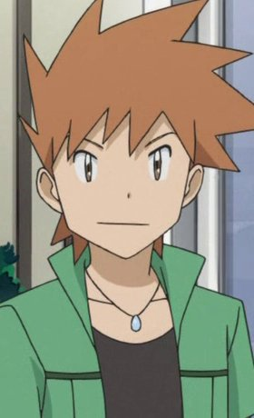
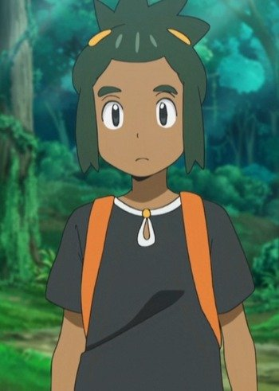
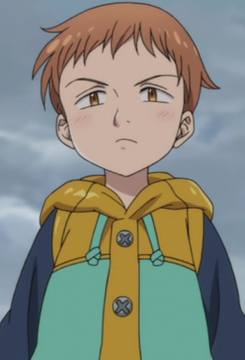

|  |
Blue |
|
Blue is the rival of Red and the champion of Kanto. He acts quite cocky but can be temperament. He prefers to go to things his own way and thus fights alone. Blue has been a dtermined albeit sometimes cold friend to many of the other Dexholders. He is Pofessor Oak's grandson. |
 |
Doctor Heartless |
- Lord El-Melloi II Case Files: Rail Zeppelin Grace Note
|
Doctor Heartless is the former Head of Modern Magecraft Theories Department of the Clock Tower. Heartless always shows a smile in his face and acts friendly towards anyone, but he has an inhaman disposition as he lacks any kind of real emotion. He is Lord El-Melloi II's predecessor. |
 |
Grell Sutcliff |
- Black Butler
- Black Butler: His Bulter, Performer
- Black Butler 2
- Black Butler 2 Specials
- Black Butler Picture Drama
- Black Butler: Book of Circus
- Black Butler: Book of Murder
- Black Butler: Book of the Altantic
|
Grell Sutcliff is a Grim Reaper of the Retrieval Division of the Grim Reaper Dispatch. Grell is over-the-top, flamboyant, and outspoken. He compares him and Sebastian to Romeo and Juliet. |
|  |
Hau |
|
Hau is the grandson of Hala, the Island Kahuna of Melemele Island. He is an energetic young Tainer keen to take on the island challenge. He lacks direction in his battle style but confident. His focus and ability to forsee his opponent's strategy. He is still learning to cope with defeat, though quickly calms himself down. |
 |
Issei Tsubaki |
- Full Metal Panic? Fumoffu
|
Issei Tsubaki is the leader of Jindai High School's karate club. He is extremely skilled at karate. Issei is nearsighted and can see slearly only when wearing his glasses. He cannot accept that he is defeated by Sousuke. |
|  |
King |
- The Seven Deadly Sins
- The Seven Deadly Sins OVA
- The Seven Deadly Sins: Signs of Holy War
- The Seven Deadly Sins: Revival of The Commandments
- The Seven Deadly Sins Movie: Prisoners of the Sky
- The Seven Deadly Sins: Wrath of the Gods
|
King is a member of the Seven Deadly Sins and Sin of the Sloth. His appearance is of a young boy. He is somewhat lazy, but a compassionate and emotional character. |
 |
L'Arc Berg |
- The Rising of the Shield Hero
|
L'Arc Berg or the Scythe Hero is the wielder of Vassal Scythe from a different world. He is carefree and laid back to every problem that comes his way. L'Arc is a good judge of character just by looking at someone. He can be childish at times. Despite being lay back, he has high morals. |
 |
Takeshi Nishigori |
|
Takeshi Nishigori is a childhood friend and ex-rinkmate of Yuri Katsuki. He is married to Yuri other friend and have three daughter. He teases Yuri on his weight. He has a laid-back personality and give Yuri practical advice. He used to skate but a fan of the sport. |
 |
Yukio Okumura |
- Blue Exorcist
- Blue Exorcist: Kuro's Trip Away From Home
- Blue Exorcist Specials
- Blue Exorcist Movie
- Blue Exorcist: Kyoto Saga
- Blue Exorcist OVA
|
Yukio Okumura is Rin's younger, fraternal twin brother. He is the youngest person to ever pass the Exorcist qualification exam with a Meister in Doctor and Dragoon. He is currently a teacher at True Cross Academy. Yukio is the exact opposite of Rin. He is quiet and calm but often has mood swings. He is usually smiling but easily gets sidetracked due to Rin personality. He takes things seriously. He does have a very aggressive side, though he is very good at hiding it. He is punctual and lectures Rin on how to behave. |